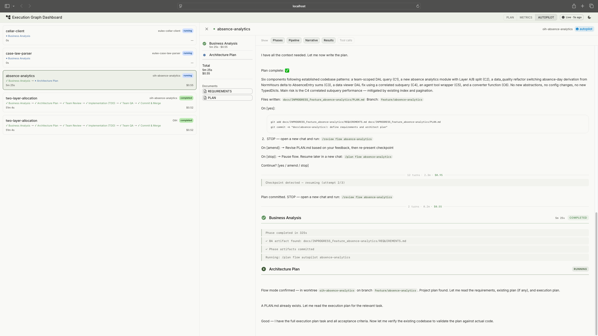

Agent Dashboard
If I'm going to let AI agents run unattended, I need to see what they did and why. This is the observability layer for the Claude Code Pipeline.
A full-stack dashboard for monitoring autonomous pipeline runs, navigating multi-task projects, and providing the audit trail that makes unattended AI work accountable.
How it started
The Claude Code Pipeline takes a feature through a structured sequence of phases: requirements, architecture, implementation, static analysis, quality assurance. AI agents do the generative work, deterministic tools verify it, and human checkpoints gate each transition. One feature at a time, it works well. But I was running everything in sequence, and real projects have work that can run in parallel: the data layer doesn't depend on the UI, the API doesn't depend on the business logic tests. I wanted a way to map out what actually needs to be sequential and what can overlap, so the whole project finishes faster. That's where execution graphs came from: structured plans that break a project into dependency-ordered tasks, each running through the pipeline independently.
Once I had execution graphs, I needed a place to see the plan and monitor how it was going: which features are done, which are in progress, and which need my attention (every phase in flow mode, where I review each transition, has a human checkpoint). The first version was a single HTML file with inline JavaScript. A bash hook registered with Claude Code fired on every session event and appended a JSONL line to a shared file. The HTML page polled that file through a small Python server and rendered session cards.
What it monitors
The plan viewer renders execution graphs as visual dependency trackers. Phases expand to show their tasks, each with a progress bar showing how far through the pipeline it is. Gates show whether pass conditions are met. This is the primary view for larger projects: which phases are done, what's blocked, where the project actually stands.
Plan viewer: execution graphs with phases, dependency connections, and task states. Tap to expand.
The dashboard also shows all active sessions across projects. Click a session and VS Code opens the relevant worktree automatically, so I can jump straight into the code. When several features run in parallel, this is how I know where my attention is needed: sessions waiting for human input get a pulsing indicator and sort to the top.
The autopilot monitor discovers active autopilot sessions by scanning project directories for pipeline output files. Each session gets a phase stepper (BA, Plan, Review, Implement, QA) and cost tracking per phase. Pipeline state at a glance, session details one click deeper. Launching a new autopilot run is one click too: the dashboard opens the project's worktree in VS Code and copies the launch command to the clipboard.

Session viewer with a live pipeline run. Session list on the left, streamed output on the right. Tap to expand.
The session viewer is the drill-down. Click any session, flow mode or autopilot, and the viewer shows what happened inside it. For active sessions, it streams Claude's output in near-real-time: phase transitions, tool calls (collapsible), the agent's reasoning, and results. For completed sessions, it's a full replay of the run. This is what made the ANSI stripping work (described under "what went wrong") worth the effort: the session viewer is useless if the output is garbled.
Task detail: pipeline phases, requirements, testplan, and artifact chain.
Session metrics came later, once I realised the hook data could feed back into the process. Eight panels cover tool usage, error rates, session lifecycle, permission friction, subagent utilization, file activity, task completion, and an activity timeline. When a run fails or takes too long, the metrics show where time and tokens went.

Session metrics: KPI strip at the top, activity timeline, tool usage, error tracking, and more. Tap to expand.
How the data flows
The backend is read-only. It never writes anything. Claude Code hooks append events to JSONL files via atomic writes. The Python server reads those files, parses NDJSON streams from pipeline runs, and scans git worktrees for execution plans. The React frontend polls for updates. No database. No server-side state.
Reads files and shells out to git. Writes nothing.
Polls at varying intervals: 1.5s for live logs, 5s for metrics, 10s for plans.
Hooks handle event generation. The backend reads. The dashboard observes.
Session discovery is automatic. The backend scans project directories for pipeline output files and execution plans. No configuration file, no session registration. Start a pipeline run and the dashboard picks it up.
Reflections
The session data turned out to be the only complete audit trail for unattended runs. Git shows the outcome, commits and merged code, but not the path that got there: which tools the agent called, which files it read, which approaches it tried and abandoned, what ruff and mypy flagged, what SonarQube reported, how the agent responded to each finding. Claude Code doesn't natively provide a browsable record of completed sessions. The dashboard captures and persists the full stream per feature, so I can review exactly what happened in any autopilot run after the fact. When AI agents write code autonomously, someone needs to be able to answer the question: "What did it actually do?" This is that answer.
That same data, the structured event logs and session metrics, lays the groundwork for automated feedback loops: patterns in how agents spend time and tokens informing pipeline rules. Right now that loop is manual. I read the metrics, spot inefficiencies, and adjust the process. The data infrastructure to close that loop is in place.
I didn't trust autopilot mode until I could watch it. The dashboard wasn't a nice-to-have that came after the pipeline was complete. It was the thing that unlocked actually using unattended runs. The read-only backend constraint helped here: no database, no migrations, no state to manage. When the data is already on disk in structured formats, adding a database just adds a synchronisation problem.
The pattern I keep coming back to is the same one organisations will face as AI-assisted development scales: structured observability over autonomous work, clear audit trails, and human oversight that doesn't require watching every step. This is a solo setup, but the governance questions are the same ones a team of fifty will hit.
What went wrong
The HTML-to-fullstack rewrite was the biggest time sink. The original HTML dashboard went up in a day and worked for session monitoring. Two days later, execution plans arrived in the pipeline and the requirements changed completely: visualising task dependencies as graphs, computing phase progress, evaluating gate conditions. Vanilla JavaScript couldn't handle that. The rewrite to React with a Python backend took longer than building the original.
ANSI escape codes in session data were the other pain point. The backend reads output from pipeline runs that include terminal colour codes, cursor movements, and control sequences. There is no definitive list of all ANSI sequences. I built the stripping regex iteratively: run a session, find garbled text in the dashboard, identify the escape sequence, add it to the pattern, repeat. Dozens of iterations before the session view rendered cleanly.
View on GitHub
tomashermansen-lang/claude-agent-dashboard